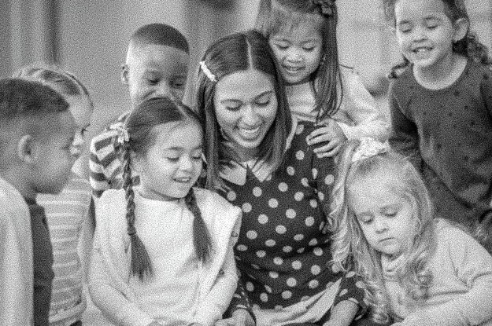
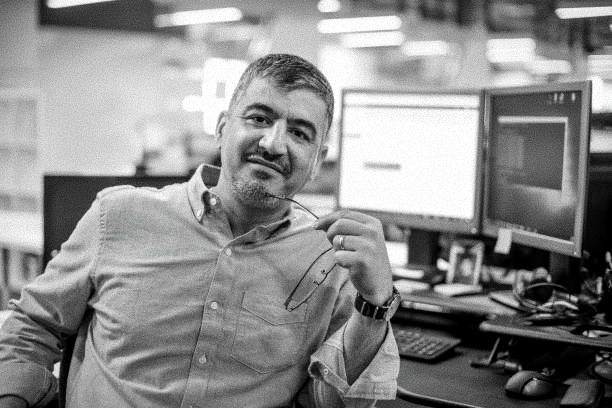

"Compartilhar minha paixão pela tecnologia é gratificante."
Marcelo de 28 anos, se dedica a ajudar pessoas e organizações a navegar no mundo digital. Com o
horário de trabalho flexível ele consegue ministrar cursos para jovens e adultos, e acompanhá-los
durante o processo de aprendizagem. Ele acredita que a tecnologia é uma ferramenta poderosa para a
inclusão. Compartilhar sua experiência como programador com ONGs da sua cidade, que se
dedicam a diversas causas, se tornou parte da sua rotina.
"Adoro ver os olhos das crianças brilharem quando elas descobrem o mundo da tecnologia.
Elisa de 35 anos tem sua primeira formação como pedagoga, está na área da tecnologia há mais ou
menos cinco anos. Ela conseguiu unir suas duas paixões: crianças e computação. Elisa ajuda ONGs que
apoiam crianças e adolescentes carentes, levando seu conhecimento e possibilitando que eles possam
ter uma formação e um futuro diferente, já que a tecnologia abre tantas portas.


"Estou orgulhoso de contribuir com meu conhecimento e experiência."
Com anos de experiência em tecnologia da informação, Renato de 57 anos agora se dedica a ajudar
aqueles que mais precisam de conhecimento. Mesmo à distância, Renato contribui com diversas ONGs
espalhadas pelo país, inclusive pessoas de sua própria faixa etária que estão iniciando agora no
mundo da tecnologia, causando um grande impacto positivo na vida dessas pessoas.
"Ser voluntária me oferece a oportunidade de aplicar o que aprendo na aula para resolver problemas
reais."
Estudante do segundo ano de Sistemas de Informação, Patrícia de 22 anos ajuda como pode
compartilhando o que aprende na sala de aula com ONGs de diversos lugares do país, adaptar a rotina
de estudante e
voluntária é um desafio que ela se propôs a fazer pensando no impacto social que esse ato causa.
Segundo ela não há barreiras quando se pensa numa causa maior, além disso, ela mobiliza colegas e
professores que estão dispostos a ajudar.